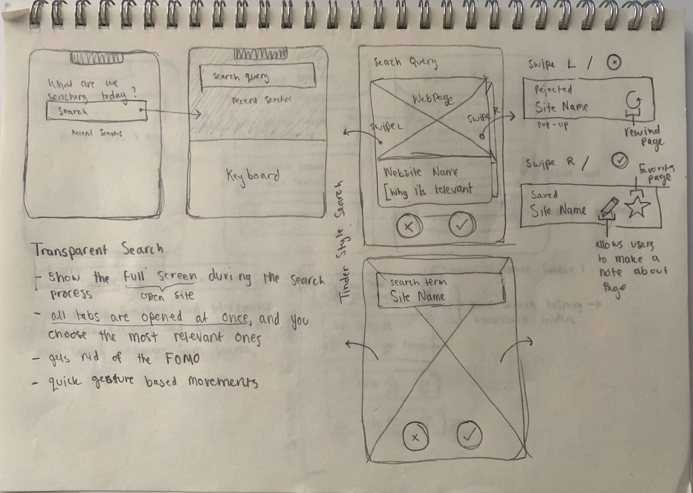
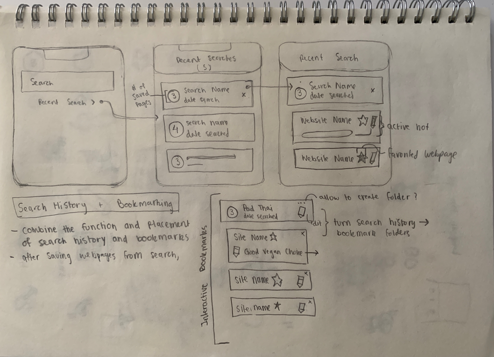
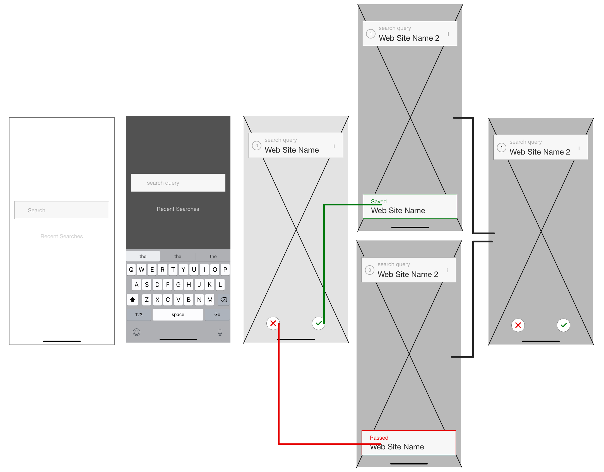
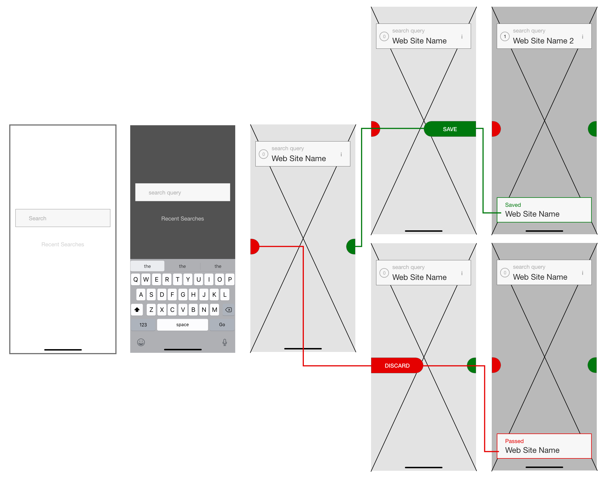
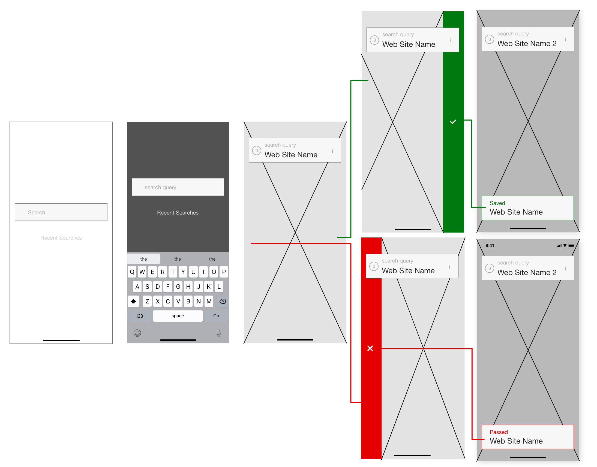

[Fill Text]
The scope of this design challenge is a bit different than a standard “redesign” or ideating a solution from a new problem space; instead I am challenged with taking a system that has already been perfected throughout the years
After some quick brainstorming and questioning, I thought up the following HMW questions to guide my thoughts throughout the design process.
[Fill Text]
how individuals utilized and interacted with search engines. To do this, I created a quick survey that I distributed to friends, and additionally asked 5 friends to participate in quick interviews. Because the problem area, digital searches, is so broad, I felt comfortable simply asking friends who I knew have used search engines before and did not need to create a criteria for who I wanted to interview. The goal from these research methods were to:
Unfortunately, the survey that I created had minimal reach and I did not receive much input. However, from the results I was able to deduce some demographic information:
Fill Text
[Fill Text]
From the interviews that I conducted, I identified two primary use cases:
[Fill Text]
[Fill Text]
[Fill Text]
[Fill Text]
With an understanding of where I can start making design changes, I started ideating and sketching possible solutions that met the design goals that I have just laid out.
[]
[]
[]
[]
[Fill Text]
[]
Mechanism 2: Button-Press
Mechanism 3: Tab-Drag
Mechanism 4: Side-Swipe
Mechanism 5: Side-by-Side Nav + Save in Middle
When designing the mock-ups for the search history, I wanted to utilize a folders system, as opposed to just having past search terms appear as users input text.
Some questions that were posed while designing these fidelity mocks were: